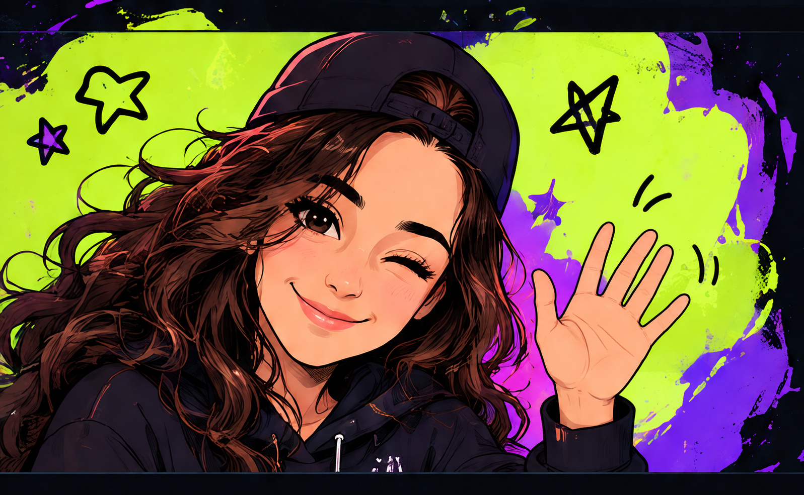

About Me
Hi, I'm Rezzan.
I'm Rezzan, an Offensive Security Researcher who enjoys learning, breaking things ethically, and exploring how systems work.
This is where I share my CTF write-ups, technical notes, and more.
Beyond cybersecurity, artificial intelligence fascinates me. I aim to build my career at the intersection of AI and cybersecurity, exploring how these two fields can shape the future of security.